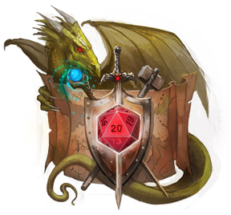

<nav class="navbar" role="navigation" aria-label="main navigation">
  <div class="navbar-brand">
      <figure class="navbar-item image">
        
      </figure>
    <a role="button" class="navbar-burger burger" aria-label="menu" aria-expanded="false" data-target="navbarBasicExample">
      <span aria-hidden="true"></span>
      <span aria-hidden="true"></span>
      <span aria-hidden="true"></span>
    </a>
  </div>

  <div id="navbarBasicExample" class="navbar-menu">
    <div class="navbar-start">
      <a class="navbar-item" routerLink="/home">
        Accueil
      </a>

      <a class="navbar-item" routerLink="/monstre-home">
        Monstres
      </a>

      <a class="navbar-item" routerLink="/jet">
        Jet de dés
      </a>
    </div>

    <div class="navbar-end">
      <div class="navbar-item">
        <div class="buttons">
          <a class="button is-primary">
            <strong>Sign up</strong>
          </a>
          <a class="button is-light">
            Log in
          </a>
        </div>
      </div>
    </div>
  </div>
</nav>